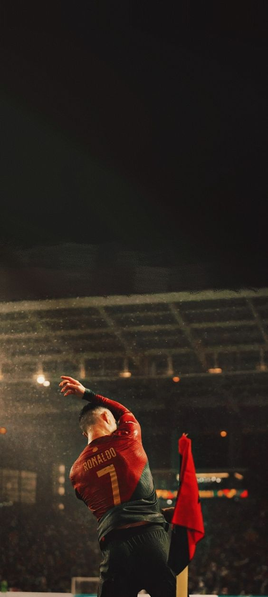

My Inspiration of time Is
Cristiano Ronaldo
Cristiano Ronaldo, often simply referred to as Ronaldo, is one of the most
iconic and accomplished footballers of all time. Born on February 5, 1985,
in Madeira, Portugal, Ronaldo began his football journey at a young age and
quickly rose through the ranks to become a global superstar.
Early Career: Ronaldo started playing football for Andorinha and CD Nacional
in his hometown before joining the Sporting Lisbon academy at the age of 12.
He made his professional debut for Sporting Lisbon in 2002.